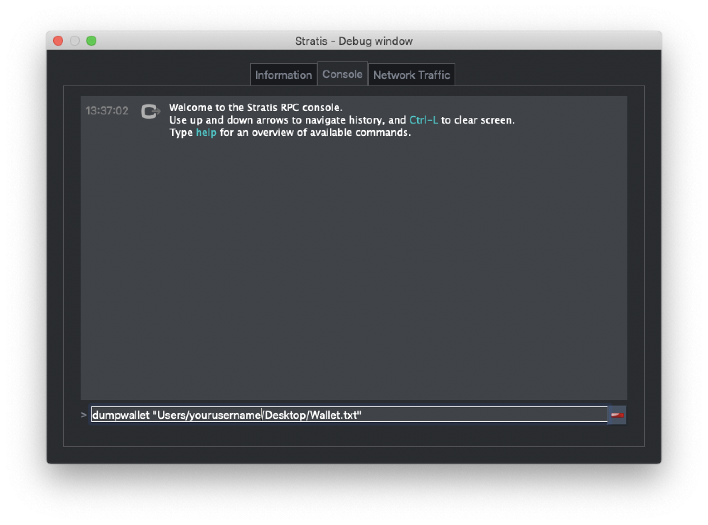

STRAX Token Swap Guide for MacOS¶
Step 1 - Obtain STRAX Wallet Address¶
Download and install the STRAX Wallet from https://www.stratisplatform.com/wallets/.
Create a new wallet and ensure you keep a secure record of your mnemonic words and optional passphrase.
Obtain a Receive Address. Keep note of this address as it will be defined later in the process.
{kind=link}
Step 2 - Obtain Address Ownership Tool¶
The AddressOwnerShipTool must be used to prove ownership of funds; please download the relevant package to your device using the release page below.
Extract the contents of the ZIP Archive to a safe location on the device where your Stratis Wallet is located.

There are three wallets that are supported by the AddressOwnershipTool.
Only complete the steps relevant to the wallet software that contains your STRAT Wallet.
Step 3 - StratisX/QT Recovery Process¶
Open the Stratis Qt application that contains your wallet
{kind=link}
Once loaded; open the console via “Help > Debug Window > Console”
{kind=link}
Enter the below command:
dumpwallet “<filepath>.txt”
Example
Please change “yourusername” to your own username.
{kind=link}
Open Terminal and navigate to the location where the AddressOwnershipTool was stored.
The simplest way to do this is to open terminal, type cd and paste the AddressOwnerShipTool folder into the terminal. Then press ENTER.
Temporarily disable Gatekeeper with the following command:
sudo spctl --master-disable
Make sure we can run the AddressOwnerShipTool with the following command:
chmod +x ./AddressOwnershipTool
Now call the AddressOwnershipTool executable with the following command:
./AddressOwnershipTool -privkeyfile=”/Users/yourusername/Desktop/Wallet.txt” -destination=destinationaddress
Please replace “destinationaddress” with YOUR STRAX Address and “yourusername” with YOUR username.
Enable Gatekeeper again with the following command:
sudo spctl --master-enable
A CSV file will be created in the directory where you launched the AddressOwnershipTool, named the same as your destination STRAX address, containing signatures, signed with your private key for each of the addresses contained within your wallet.
Upload this CSV to STRAX Token Swap Process Form
Step 3 - Stratis Core Recovery Process¶
Open Terminal and navigate to the location where the AddressOwnershipTool was stored.
The simplest way to do this is to open terminal, type cd and paste the AddressOwnerShipTool folder into the terminal. Then press ENTER.
Temporarily disable Gatekeeper with the following command:
sudo spctl --master-disable
Make sure we can run the AddressOwnerShipTool with the following command:
chmod +x ./AddressOwnershipTool
Now call the AddressOwnershipTool executable with the following command:
./AddressOwnershipTool -name=StratisCoreWalletName -password=walletPassword -destination=STRAXAddress
Please replace the all values with your genuine values relating to your Stratis Wallet; i.e. walletName, walletPassword, STRAXAddress
Enable Gatekeeper again with the following command:
sudo spctl --master-enable
The AddressOwnerShip Tool will now load your wallet and return a line for each discovered address, the ending result will look like the below.
SZ5fg1NkRk1qT3JBpNKopZmea4wgDcA7Hp;XU2jNwiac7XF8rQvSk2bgibmwsNLkkhsHV;IGbJN2tg1GBY3MXf9sGq2sQwGCdLy/CqsuD6CROf6lQrASDASDASWXe/MF8+fPrlNjf2vivTmW7gCcYG4Fk3Tak=
SNR6v9CUxUwDgfkCoAJ1KKennZzeK5hS3D;XU2jNwiac7XF8rQvSk2bgibmwsNLkkhsHV;IM59KY8OtMnlTkdJCdIuGm5FNSDFDSFSDFSDSADASDASDVuO+EANs9hLGK8EqyL+A41/5LnhMIy8xaimLZlddx0=
SWKAjAnBS44SWM9D5GZMNmTbKmYT7Xi7to;XU2jNwiac7XF8rQvSk2bgibmwsNLkkhsHV;H/QB1rHxSMA2qmaX1FycNFeEcP/dPWzBEw2ESyS2S615CasdasdsadOnAutuGh8SVnH2s/bMBCp7RNzl6o9Q/UI=
SRib9v44CpufsrkRjHATb9D4bjdzXuQTrp;XU2jNwiac7XF8rQvSk2bgibmwsNLkkhsHV;IDr81471+aNwYIAVaDGMjigB9AmrM/m0nBasdsadsadasJBJJT/aCRZ9TmJsPpopcT4YgCDph6kVXPlGpjNzOJQ=
SUpWKzs4Rn4CVFrGsBLW9SQzGgUH1g7KPo;XU2jNwiac7XF8rQvSk2bgibmwsNLkkhsHV;IL0GV9SJRmLFMiznalzGsZmDC5uCDFDFDFDFDSFDSFSDF+rcezkpCf22kmvIZXeFVYhAiQOkC2OmDvqkMkyKDj8=
SXSZ4n944Z92iEyVyLiHhowAB5NBdAuYSY;XU2jNwiac7XF8rQvSk2bgibmwsNLkkhsHV;IPFp7KsX4Yig7bOBuInlNImuLX7F5dpHxUMqosI9DFDFDQ86VGa2EBZWwHn31bdP8Qx1qcr5F+8E4PcMEtZu6Nw=
A CSV file will be created in the directory where you launched the AddressOwnershipTool, named the same as your destination STRAX address, containing signatures, signed with your private key for each of the addresses contained within your wallet.
Upload this CSV to STRAX Token Swap Process Form